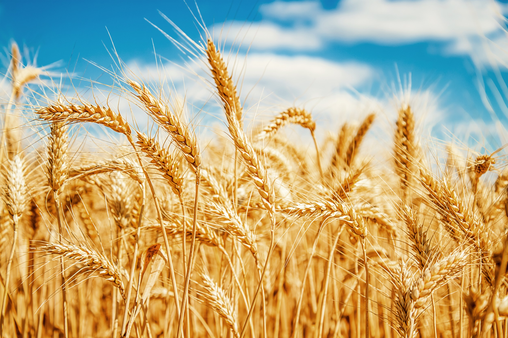
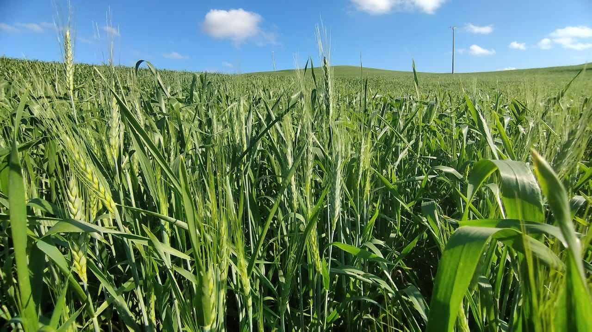
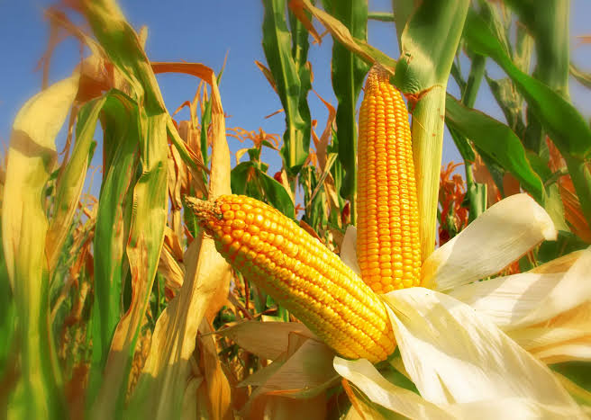

Trigo
O trigo é um dos cereais mais importantes do mundo, sendo cultivado em várias regiões devido à sua versatilidade e valor nutricional. É uma planta gramínea da espécie Triticum spp., da família Poaceae (ou Gramineae), amplamente utilizada na produção de farinha para diversos fins alimentares.
O trigo começou a ser cultivado e utilizado por povos antigos no período Neolítico, aproximadamente entre 10.000 e 12.000 anos atrás. Esse período marca o início da agricultura, quando os seres humanos começaram a se estabelecer de forma mais sedentária e a cultivar plantas e criar animais.


Milho
O milho (Zea mays) é um dos cereais mais cultivados e importantes do mundo, servindo como base para a alimentação humana, ração animal e insumo industrial. Originário do México há milhares de anos, o grão se destaca por sua impressionante versatilidade, alta produtividade e relevância econômica global.
O milho pertence ao grupo das angiospermas, ou seja, produz as sementes no fruto. A planta do milho chega a uma altura de 2,5 metros, embora haja variedades bem mais baixas. O caule tem aparência de bambu e as juntas estão geralmente a cinquenta centímetros de distância umas das outras.


Contato
Preencha os campos abaixo para entrar em contato.